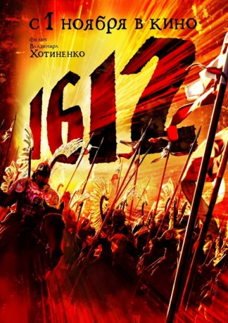

#10447 1612 - Angriff der Kreuzritter
Alternativ: 1612: Khroniki smutnogo vremeni (Englischer Titel)
 
 IMDB-Wertung: 5.7 / 10
IMDB-Wertung: 5.7 / 10  Metascore: 0
Metascore: 0 
1612 - Die Zeit des Aufruhrs in Russland. Truppen der polnisch-litauischen Koalition sind bis nach Moskau vorgedrungen. Mit eiserner Hand regieren sie über die besetzten Teile Russlands. Doch der heldenhafte Andrei stellt sich den mächtigen polnischen Truppen entgegen. Er befreit nicht nur eine unschuldige Frau aus den Fängen der Polen, sondern führt auch die Partisanen an, um die verhassten Besatzer aus dem Land zu werfen. Die große Schlacht steht bevor, und das Ende der Unterdrückung ist gekommen.
Jahr: 2007
Dauer: 143 Minuten
FSK:
Land: Russland Studio: EuroVideoTonspuren: DTS - ,
Untertitel:
Auflösung: 1080p (1920x784) Größe: 10065 MB
Genre: Drama, Abenteuer, Krieg, Fantasy, Geschichte
Regisseur: Vladimir Khotinenko
Drehbuch: Arif Aliev
Soundtrack: Aleksey Rybnikov
Darsteller:
- Pyotr Kislov als Andrei
- Michal Zebrowski als Polish hetman Kybowsky
- Aleksandr Baluev als Brigand Osina
- Mikhail Porechenkov als Prince Dmitri Pozharsky
 Aleksandr Samoylenko als Mordan
Aleksandr Samoylenko als Mordan Valeriy Zolotukhin als Stylite
Valeriy Zolotukhin als Stylite- Daniil Spivakovskiy als Styopka Podkova
- Viktor Shamirov als Lavitskiy
- Artur Smolyaninov als Kostka
- Violetta Davydovskaya als Kseniya Godunova
- Marat Basharov als Military commander Navoloka
- Ramón Langa als Alvar
- Filipp Korshunov als Soldger
- Dmitriy Mukhamadeev als Mute
- Dmitriy Ulyanov als False Dmitri I
- Sergey Vlasov als Otets Andreyki
- Marat Garipov als Nayomnik
- Andrey Golubev als
- Lyubov Lvova als
Datei: X:\2007(A-F)\1612 - Angriff der Kreuzritter (2007, FSK, 1920x784).mkv seit 09.01.2019
Festplatte: HD 2007(A-Z)-2008(A-F)
 Es gibt insgesamt 65 Filme in der Gruppe '2007(A-F)'
Es gibt insgesamt 65 Filme in der Gruppe '2007(A-F)'